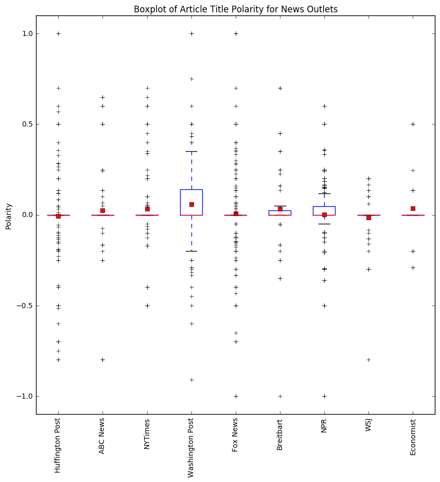
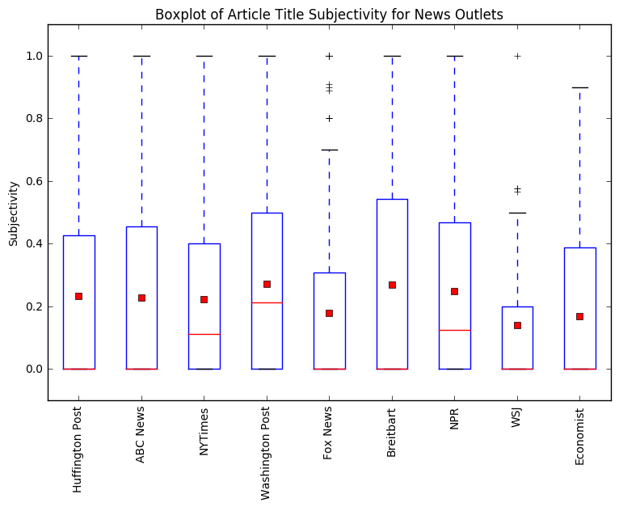

Question: How is Trump portrayed in different news sources?
- Liberal
- Conservative
- Neither
Our Analysis
To answer our question, we web scraped the article titles from the 9 news sources’ politics page and/or opinion page over the span of this quarter. Once we web scraped the titles into a text file, we filtered out the titles based on the following key words:
whitehouse, trump, conway, sessions, pence, president, tillerson, devos, flynn, kushner, carson, department, preibus, bannon, spicer, and miller.
Once the titles were filtered, we wanted to see whether the more conservative news outlets used more positive language in their titles about Donald Trump, whether the liberal news outlets used more negative language, and whether the news outlets that deem neither stance are more neutral.
To do this, we needed to use two essential Python packages:
- NLTK
- TextBlob
We used TextBlob to find the overall polarity (how positive/negative the words used are) and subjective the titles are. We predicted that the liberal news sources would be subjective and negative, the conservative news sources be subjective and positive, and the others be neutral and not subjective.
Our findings can be seen in the plots below. The first plot shows the polarity of the titles for each news source.
The liberal news outlets have a wide range of values for polarity, where most of the article titles are neutral, but overall seem to have slightly more positive article titles than negative ones. The conservative news outlets also have many neutral titles, with slightly more positive article titles. This is especially true when we look at the boxplot for Breitbart, we can see that the majority of the boxplot range is positive. The outlets marked as other seem to be more negative than positive but they indeed have more neutral article titles.
The next plot showcases the subjectivity of each news outlet.
Each boxplot tells us how subjective the articles for each news source is, subjectivity is a number is on a scale of 0 to 1, where 0 is very objective and 1 is very subjective. From the graph, we see that none of the news outlets are very subjective. The least subjective news outlet is Wall Street Journal and the most subjective news outlets are Washington Post and Breitbart. This makes sense because The Washington Post is one of the more liberal news outlets (against Trump) and Breitbart is headed by a few who hold a position in office under Trump (supporters).
Comparing All Titles from News Sources
Since there did not seem to be a big enough difference between the polarity and subjectivity of the titles for the different kinds of news sources, we wanted to check to see how similar the titles are from each other. We did this using the scikit-learn Python package. Our results are shown in the table below:

The Media's Ideology and Its Perception of Trump
In this section we observe how the viewer base's ideology of different websites affect their reporting on Trump. In order to get ideology scores we webscraped the Pew Reports website. We obtained the tables first and then had to split the tables using regular expressions. After creating the data frames we used Pew's scoring ideology scoring criterion: [-8.5 for extreme left, -4.5 for moderate left, 0 for neutral, 4.5 for moderate right, and 8.5 for extreme left. Since we did not have Pew's survey data we first summed the rows, creating a total percentage of people that trust the news source. These numbers will represent the amount of people who actually believe the news source. We then divided each indivual value from the summed row allowing us to see the percentage of the makeup of people who trust this source. We then multiplied these valus by their respective group in the data frame and then summed across to get that news paper's average viewer base. These values wil not necessarily be the same as Pew's actual scores due to Pew having ranges for each value between -10 and 10 and then scoring survey results accordingly. However; this data was not openly available and in our case we thought this would give us a rough estimate of Pew's actual scores. Next, we obtained the size of viewership of each news source by summing the original trust percentages. This gave us a value that would illustrate how many people have actually trust of the news source. We then used this value to represent the size of people who trust the website, and this variable is illustrated in the plots below as the size of the dot.